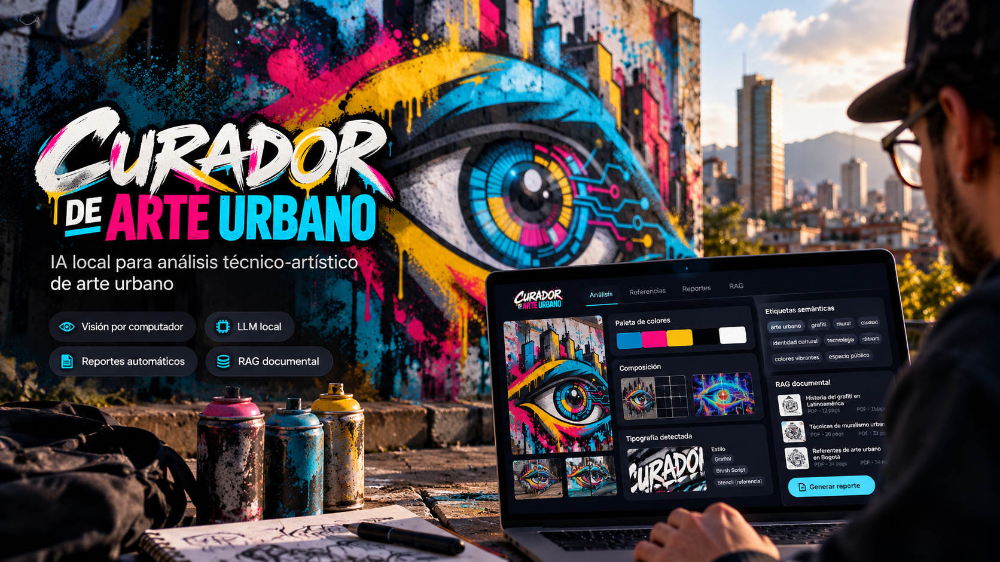
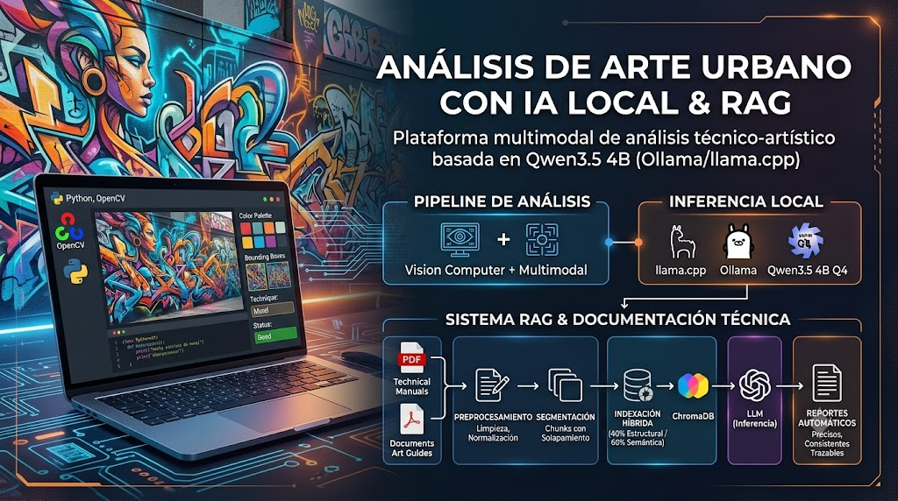

Proyecto de Investigación
Curador de Arte Urbano
Plataforma de análisis técnico-artístico basada en IA generativa, visión por computador, RAG y modelos de lenguaje multimodales para la generación automatizada de reportes sobre obras de arte urbano.
01 — Descripción
Análisis de arte urbano con inteligencia artificial
Desarrollé Curador de Arte Urbano para explorar cómo la inteligencia artificial puede ayudar a comprender una obra más allá de lo que vemos a primera vista. La plataforma analiza imágenes de arte urbano y genera reportes que reúnen información sobre sus colores, composición, técnicas y contexto.
Combiné Python y OpenCV para procesar las imágenes con modelos de lenguaje ejecutados localmente mediante llama.cpp y Ollama. Elegí Qwen3.5 4B cuantizado en Q4 buscando un equilibrio entre la calidad del análisis y el uso de recursos, sin depender de servicios de IA en la nube.
Durante el desarrollo comparé distintos modelos y ajusté las instrucciones que reciben para orientar el análisis. Incorporé datos extraídos de cada imagen, como la paleta de color, la tipografía y el estado de conservación, para obtener respuestas más consistentes y centradas en las características de la obra.
Utilicé LangChain para conectar los modelos de lenguaje con el sistema RAG y construir agentes con herramientas de consulta (tools). Estas herramientas permiten consultar información sobre las características analizadas, como el color, la composición o la tipografía, y recuperar referencias de documentos especializados. Así, los reportes combinan el análisis visual con información que ayuda a contextualizar la obra.
02 — Pipeline RAG
Recuperación aumentada de generación
Preprocesamiento
Normalización del contenido de PDFs eliminando caracteres especiales, ruido tipográfico y elementos no relevantes antes de la indexación.
Segmentación
División del documento en chunks con solapamiento, preservando el contexto entre fragmentos para maximizar la recuperación de información.
Selección híbrida
Evaluación combinada de similitud estructural (40%) y similitud semántica mediante embeddings (60%), con umbral mínimo del 70%.
Indexación
Almacenamiento de los chunks seleccionados en ChromaDB para construir una base vectorial especializada y actualizable.
Agentes y herramientas de consulta
Con LangChain, conecté los agentes con tools para consultar información relacionada con las características de cada obra. La recuperación Top-K en ChromaDB aporta fragmentos de documentos especializados para complementar el análisis del modelo. Este flujo permite enriquecer las respuestas con contexto y actualizar las referencias sin reentrenar el modelo base.
03 — Arquitectura
Componentes del sistema
La plataforma combina múltiples componentes de inteligencia artificial para el análisis técnico-artístico de obras de arte urbano:
- Motor de análisis cromático con Python y OpenCV, utilizando K-Means y espacios de color CIELAB, HSV y RGB para extraer paletas de color.
- Pipeline RAG con ChromaDB, embeddings especializados y recuperación Top-K para enriquecer las respuestas del modelo.
- Orquestación con LangChain para conectar modelos de lenguaje, recuperación documental y herramientas de consulta.
- Agentes con tools para consultar información sobre el color, la composición, la tipografía y otras características analizadas en las obras.
- Ejecución local de LLMs mediante Ollama y llama.cpp, evaluando modelos multimodales según sus capacidades.
- Prompt Engineering para mejorar la consistencia, calidad y especificidad de los análisis generados.
04 — Tecnologías
Stack tecnológico
Lenguaje
Python
Visión por computador
OpenCV, K-Means, CIELAB, HSV, RGB
LLMs locales
Ollama, llama.cpp
Base vectorial
ChromaDB
Recuperación
RAG, Embeddings, Top-K
LangChain y agentes
Tools de consulta, orquestación de modelos y diseño de prompts
05 — Galería
Vista de la plataforma

